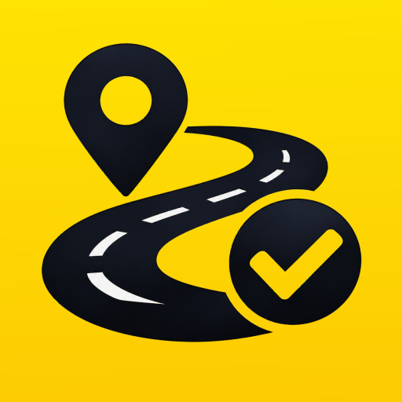

02 · Telas do app
Simples na mão de quem dirige, completo na mão de quem coordena.
Arraste para o lado para ver mais.



Controle de EscalasOndas, vagas e turnos organizados em tempo real — e cada chamada de carregamento chegando direto no celular de quem dirige.
Grátis durante o beta · o app avisa sobre versões novas sozinho
Feito para a rotina de quem coordena carregamento — e de quem dirige.
Monte as ondas com vaga e rota por motorista. Os turnos da base (AM0, AM, PM, SD, SN…) dirigem a operação — você cria e remove os que usar.
Chame o motorista para a vaga ou para o estacionamento: ele recebe a notificação na hora e o status (a caminho, chegou, carregando, concluído) aparece no painel.
O motorista responde turno por turno e o admin vê, antes de montar a escala, quem pode amanhã — sem caçar resposta no grupo.
Fotografe a tabela da logística: o app lê rotas e docas por OCR e monta as ondas do dia. Quem já tem rota na pré-escala vai direto para a vaga.
Diga quem pega cada rota e compartilhe a escala formatada por modalidade no WhatsApp em segundos — com horário do turno e observações.
Escala do dia com onda, vaga e rota, status do carregamento e a quinzena de dias trabalhados — tudo no app do motorista.
Arraste para o lado para ver mais.
Instale o APK direto no celular. O app avisa sobre novas versões automaticamente ao abrir.
Cada release, com data e detalhes no GitHub.
Carregando…